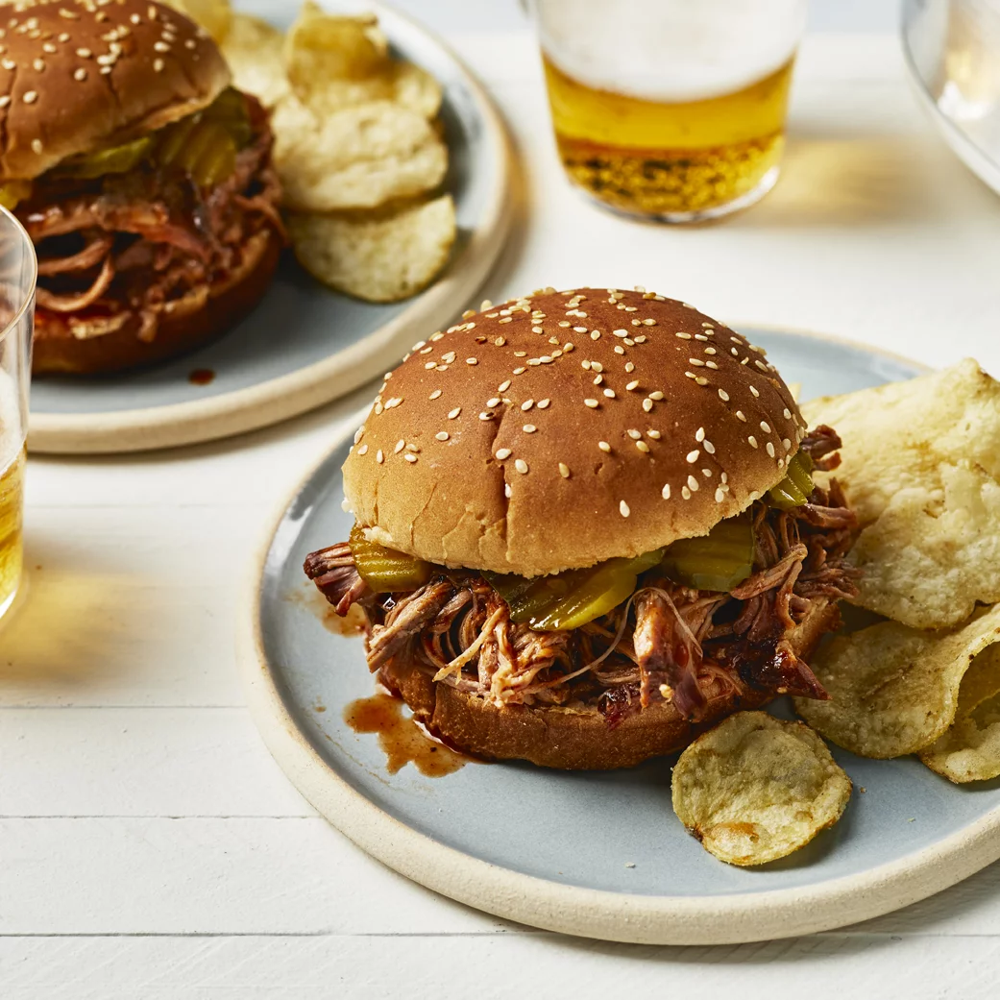

Memphis Pulled Pork

Description
Tender, flavourful pork for use in sandwiches, tacos, or just about any place you'd want a meat filling.
Ingredients
- 1 onion, thinly sliced
- 6 cloves garlic, peeled
- 28 oz beef broth
- 18 oz barbecue sauce
- 1/3 cup brown sugar
- 1/3 cup cider vinegar
- 1/2 tspn ground black pepper
- 1 4 lb Boston butt pork shoulder roast
- 2 tbspns corn starch
- 3 tbspns water
Steps
- Spread onion slices and garlic cloves in the bottom of a slow cooker; stir in beef broth, barbeque sauce, brown sugar, cider vinegar, and pepper. Add pork roast.
- Cover and cook on Low for 6 to 8 hours. Remove pork from slow cooker. Strain juices and return to the slow cooker. Mix water and cornstarch in a bowl; stir into juices until sauce is thickened.